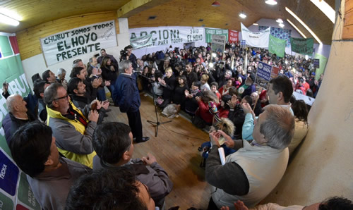

Real Chubut - Agencia de Noticias


Das Neves presentó en Cholila a Arcioni y Rosa Muñoz como candidatos a diputados nacionales
Información de prensa del Frente Electoral Chubut Para Todos
Los acompañarán en Chubut Para Todos, como suplentes, Sixto Bermejo y Virgnia Menghini
El gobernador del Chubut, Mario Das Neves, encabezó este mediodía en Cholila la presentación de la fórmula de Chubut Para Todos que competirá en las elecciones Primarias, Abiertas, Simultáneas y Obligatorias (PAS) y que integran el actual vicegobernador Mariano Arcioni y Rosa Rosario Muñoz como precandidatos a diputados nacionales.
El acto se desarrolló en las colmadas instalaciones del Club Belgrano de Cholila y, acompañado por intendentes, diputados provinciales y nacionales, Das Neves fue el único orador del acto en el que agradeció "de todo corazón" a la militancia porque "sería absolutamente imposible haber llegado con mucho orgullo a ser gobernador".
"Esto lo digo porque siempre he sentido de querer de la gente", remató.
La lista que presentará Chubut Para Todos estará integrada entonces como Arcioni como primer precandidato a diputado nacional y la ex legisladora Rosa Muñoz en segundo término, mientras que el primer precandidato suplente será el actual legislador nacional Sixto Bermejo y la segunda suplente, la madrynense Virginia Menghini.
Das Neves recordó momentos difíciles de la campaña del año 2013 y mencionó que "acá un día, que nos tiraban de todos lados, habíamos organizado un acto y unos minutos antes nos cerraron el lugar. Pero igual seguimos haciéndolos en cualquier lugar".
El mandatario y líder de Chubut Para Todos realzó la importancia y la trascendencia de "la gestión" y reconoció que "me enojo mucho cuando está la gestión de por medio me enojo contra aquellos que quieren perjudicar una gestión, porque no es a mí sino a la gente a la que se perjudica".
Das Neves recordó cuando allá por el año 2002 la gente reclamaba "que se vayan todos" y consideró que el actual momento es "muy parecido", y volviendo a ese año 2002 sostuvo que "el 5 de abril de ese año cuando tuve el alta, dije este es mi momento porque si no me llaman de arriba me van a tener que aguantar acá abajo".
"Esto lo hicieron ustedes", dijo a los presentes y recordó que "cuando veníamos a Cholila, que no había una sola cuadra de asfalto, cuántas hay hoy? Yo la catalogue la ciudad de las diagonales. Hicimos un hospital para 20 mil personas, no para los 3 o 4 mil que vivían acá, pusimos un banco como la gente, la estación de servicio, más de 400 soluciones habitacionales. Un esfuerzo realmente importante porque era la gente la que nos iba empujando".
Das Neves volvió a expresar que "cuando decimos que no se puede, se lo decimos o decimos que esperen" y enfatizó que "no hay que mentirle a la gente, son unos mentirosos, traidores y sinvergüenzas los que prometen cosas que después no cumplen".
"En una provincia como esta no puede haber gente que la esté pasando mal. Eso es lo que a mí me enerva y me preocupa, y no me va a hacer callar nadie, solamente la razón y mostrarme que estoy equivocado", indicó.
En Chubut, resumió Das Neves, "tenemos cloacas en la mayoría de las localidades, hasta en los pueblos chicos. Y eso es salud, eso es peronismo, eso es Chubut Para Todos".
LA FORMULA
Das Neves recordó que "nosotros venimos ganando hace nueve elecciones consecutivas" y mencionó que "cualquiera puede hacer un discurso lindo, no nos van a encontrar lindos, no tengo la verba de otros, me como las eses y digo a veces cosas que no son correctamente políticas pero las digo desde el corazón, desde lo que siento".
En ese instante reconoció cuando convocó a Mariano Arcioni para que sea su candidato a vicegobernador y aseguró que "hoy es la figura que tiene más alto porcentaje de adhesión en Comodoro Rivadavia, y va a ser nuestro primer representante en la lista de candidatos a diputados nacionales".
Rememoró también cuando en pleno tratamiento de su enfermedad era Arcioni el que "me cuidaba al espalda, que caminaba la provincia, que era leal, que cuando vino la emergencia en Comodoro fue y puso la cara todos los días, ese es Arcioni".
Destacó Das Neves las aspiraciones de todos y en ese contexto remarcó que "independientemente de los méritos que tienen un montón de compañeros, como mi amigo Máximo Pérez Catán, que es mi amigo y eso nadie me lo va a quitar y que hace 40 años que milito con él".

"Por eso también como compañera de fórmula de Mariano Arcioni, elegí a una compañera que hace 35 años que trabaja al lado mío y hemos recorrido la provincia cuando nos daban vuelta la cara nuestros mismos compañeros, esa es Rosa Muñoz", completó Das Neves.
Agradeció al actual diputado nacional Sixto Bermejo, al que definió como "una persona de bien", y confirmó que será el primer candidato suplente y el segundo lugar suplente lo ocupará Virginia Menghini.
"Ya tenemos gente trabajando y todos tenemos que salir a trabajar porque nos tenemos que llevar a los dos diputados al Congreso para de una vez por todas hacer lo que tenemos que hacer", expresó.
El mandatario adelantó que lo van a encontrar "en cualquier rincón de la provincia" y planteó la estrategia de campaña indicando que "le vamos a debatir los proyectos, lo que hicimos y lo que hicieron, porque la gente vota gestión, la gente quiere ver qué le pasó en estos años con el trabajo, con la educación de sus hijos, si tienen un hospital nuevo, si hay rutas nuevas y si tienen servicios".
"Les pido que nos acompañen, que apretemos los dientes, no estamos jugando un partido fácil porque la situación es difícil. Porque los partidos de la oposición mienten y actúan de forma salvaje y todavía no salieron a la caza. Solamente se reúnen en algunos escritorios entre cuatro o cinco", concluyó Das Neves.
PUBLICIDAD